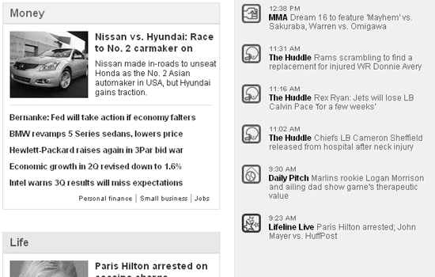
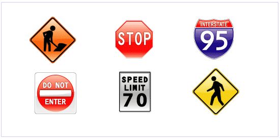
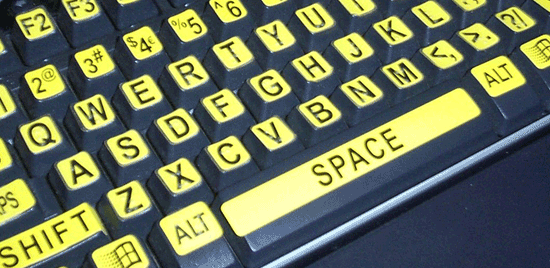

vad betyder tillgänglighet
Tillgänglighet handlar om hur samhället utformas. Ett tillgängligt samhälle är utformat så att så många som möjligt kan använda och ta del av det. Det handlar om att kunna ta del av den fysiska miljön och kunna ta sig runt i samhället. Det innebär också att få tillgång till information och kommunikation samt att kunna använda produkter och tjänster.
vad innebär tillgänglighet på webben
Tillgänglighet betyder att alla människor inklusive personer med funktionshinder kan använda webben. Utförligare kan man säga att tillgänglighet innebär att människor med funktionshinder kan uppfatta, förstå, navigera, interagera med, och bidra med information till webben. Tillgänglighet gynnar även andra, till exempel äldre med svårigheter på grund av åldrande.
När människors användning och medvetenhet om webben växer, blir tillgänglighet (eller "universell design") mer avgörande. Tillgänglighet bestäms inte bara av en webbplatss kod utan av dess design och innehåll
Att göra tillgänglig design på en webbplats
1."Standard" textinnehållsstruktur
Välj lämpliga teckenstorlekar, radhöjder, bokstavsavstånd etc. för att göra text logisk, läsbar och bekväm att läsa.
2.Färgkontrast

Relaterat till den sista punkten, ge din design tillräcklig färgkontrast, vilket kommer att hjälpa synskadade och färgblinda användare. WCAG 2.0 Level AAA kräver ett minsta kontrastförhållande på 7 till 1.
3.Använd mer än färg för att förmedla mening

Många människor har någon form av synnedsättning, till exempel färgblindhet. Så man kan inte använda färg ensam för att kommunicera mening.
4.Tillhandahålla transkriptioner
Ge allt ljud ett textkompanjemang för att hjälpa användare som är döva eller hörselskada.
5.Lägg till bildtexter
Man bör tillhandahålla tidsinställd bildtext på video- och multimediainnehål
vad kan man som frontend-utvecklare tänka på för att skapa tillgänglig koder.
1.Konsekvent layout och struktur
För att hjälpa användare att navigera snabbt och enkelt på din webbplats bör du tillhandahålla en konsekvent layout och struktur. Sidans huvudelement – banner, navigering, sidofält – ska visas på samma platser på hela webbplatsen. De bör också markeras konsekvent, till exempel med samma rubrikstruktur. Detta kommer också att gynna de med kognitiva funktionsnedsättningar och de som använder en skärmläsarapplikation
2.Lägg till alternativ text till bilder
Ett bildelements alt-attribut ger en textbeskrivning av bilden. När bilden inte kan ses – vilket skulle vara fallet med blinda användare, sökmotorer, blockerade bilder och trasiga länkar – så nås bildens "innehåll" via dess alt-text.
3. använda semantiska HTML-taggar.
Wrong: <span style="font-size:2em" ><b >My Page Title </b ></span >
Right: <h1 >My Page Title<h1 >
4.Gör alla länkar tillgängliga för tangentbordet
Många människor använder inte en mus. Vissa hjälpmedelstekniker förlitar sig på tangentbordsinmatning eller ett virtuellt tangentbord snarare än en mus eller pekdon. Av denna anledning bör länkar inte kräva en mus för att nås. Håll dig till standarden ett element med ett href-attribut.
5.Använd listelement för listor
Låter så enkelt, men listor är så ofta inte rätt uppmärkta. Oordnade, ordnade och definitionslistor är utmärkta för att markera all slags information. Oordnade listor ( <ul>) är bra för vanliga punktlistor och navigeringslänkar. Ordnade listor (<ol>) är i princip numrerade listor, som används för att visa till exempel steg i en process. När du kodar en oordnad lista, lägg inte punktbilder i linje med innehållet. Använd istället en korrekt uppmärkt lista och stil sedan med CSS